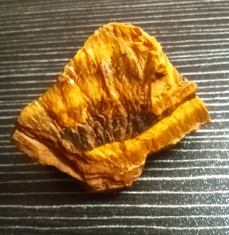
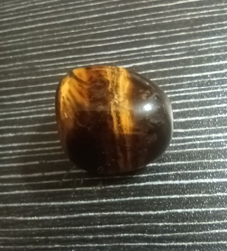

L’occhio di tigre è una varietà pseudomorfa di quarzo appartenente al gruppo delle pietre occhio. La sua formula chimica è SiO₂ (biossido di silicio), ma la sua origine è affascinante: si forma per sostituzione pseudomorfa di fibre di riebeckite (anfibolo asbestiforme) o crocidolite da parte di quarzo microcristallino. Il caratteristico effetto occhio di gatto (chatoscienza) e le bande dorate e brune sono dovute alla presenza residua di ossidi di ferro, in particolare limonite, che si intercalano tra le fibre di quarzo.
I principali giacimenti si trovano in Sudafrica, Australia, India, Myanmar e Stati Uniti. L’occhio di tigre si presenta tipicamente in forma massiva, lucidata a cabochon per esaltare il caratteristico gioco di luce dorato e brunastro. Ne esistono varietà come l’occhio di bue (tonalità rossastre per trattamento termico) e l’occhio di falco (blu-grigio, con fibre di crocidolite non alterate).
Era considerato nell'antichità una pietra di protezione e potere. Per i guerrieri romani era un talismano da portare in battaglia, capace di unire forza e audacia. Indossavano amuleti di occhio di tigre per sentirsi invincibili e per mantenere la lucidità anche nel fragore dello scontro. Simboleggiava lo sguardo vigile della tigre, sempre pronto a difendere e ad attaccare con determinazione.
In cristalloterapia, l'occhio di tigre è una pietra di radicamento e coraggio. Aiuta a trasformare l'ansia in determinazione, l'incertezza in azione chiara, e rafforza la volontà senza cadere nell'aggressività. È particolarmente indicato per chi cerca equilibrio tra forza interiore e controllo emotivo.
Posizionato sul terzo chakra (plesso solare, Manipura), favorisce la fiducia in sé stessi, la chiarezza decisionale, la resilienza e il dinamismo.

L’occhio di tigre è celebre per la sua capacità di infondere forza tranquilla e fiducia nelle proprie capacità. Aiuta a superare le paure irrazionali, a trasformare lo stress in energia costruttiva e a mantenere la concentrazione sugli obiettivi. A differenza di altre pietre “aggressive”, l’occhio di tigre dona determinazione senza eccedere in rabbia o impulsività, insegnando l’arte del guerriero consapevole.
Tenere un occhio di tigre sul comodino o vicino al letto si ritiene aiuti a risvegliarsi con maggiore energia e focalizzazione, rendendo le mattinate più produttive e la mente più lucida. È spesso utilizzato anche da chi pratica sport o attività che richiedono reattività e sangue freddo. Tenuto sulla scrivania aiuta a focalizzarsi con energia sul proprio lavoro.
- Protezione e coraggio
- Trasforma ansia in determinazione
- Rafforza volontà senza aggressività
- Fiducia in sé stessi e resilienza
- Sul comodino per sveglia energica
- Sul plesso solare in meditazione
- In ufficio per decisioni chiare
- Come talismano in situazioni di sfida
“Era considerato nell'antichità una pietra di protezione e potere. Per i guerrieri romani era un talismano da portare in battaglia, capace di unire forza e audacia.
In cristalloterapia, l'occhio di tigre è una pietra di radicamento e coraggio. Aiuta a trasformare l'ansia in determinazione, l'incertezza in azione chiara, e rafforza la volontà senza cadere nell'aggressività.
Tenere un occhio di tigre sul comodino o vicino al letto si ritiene aiuti a risvegliarsi con maggiore energia e focalizzazione. Tenuto sulla scrivania aiuta a focalizzarsi sul lavoro.
Posizionato sul terzo chakra (plesso solare, Manipura), favorisce la fiducia in sé stessi, la chiarezza decisionale, la resilienza e il dinamismo.”

Purezza e cura
L’occhio di tigre è resistente (durezza 6,5-7). Puoi pulirlo con acqua tiepida e sapone neutro. Ricaricalo alla luce solare o al chiaro di luna. Evita urti violenti che potrebbero rompere la struttura fibrosa. È ideale per un uso quotidiano.
Varietà e giacimenti
I migliori esemplari provengono dal Sudafrica (miniera di Griqualand West). Esistono varietà: occhio di bue (rossastro per trattamento termico), occhio di falco (blu-grigio), e occhio di tigre rosso (naturale, più raro).
Scienza e simbolo
La mineralogia spiega la chatoyance con la struttura fibrosa; la tradizione lo vede come scudo e sprone. Unisce la fisica dei cristalli alla psicologia del coraggio, ideale per chi cerca equilibrio tra azione e riflessione.